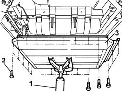

1043E12 GPL TANK GUARD PROTECTION R R
- Path
- Procedures > 10 ENGINE UNIT > 1043 GPL TANK AND PIPES > 1043E PROTECTIONS FASTENINGS > 1043E12 GPL TANK GUARD PROTECTION R R
- Kind
- repair procedure (removal / refitting; the operation number is the code)
- Applies to
- engines: 2.0 16V; all production periods
- Interactive page
- https://sloeber94.github.io/elrnDB-fDct/en/#/244002684
Applies to: engines: 2.0 16V; all production periods
 Removing
Removing
 Refitting
RefittingPosition the vehicle on the lift.
1. Position a hydraulic support under the LPG canister guard.
2. Undo the fixing bolts around the perimeter and the four centre ones, keep the washers.
3. Lower the hydraulic support and remove the LPG tank guard.

Applies to: engines: 2.0 16V; all production periods
Refitting
RemovingPosition the LPG tank guard on the hydraulic support.
Position the fixing bolts and washers.
Tighten the fixing bolts to the recommended torque.
Value daNm | Fastening | Component | Ø | |
|---|---|---|---|---|
- | 1 | Bolt | M6 |
Remove the hydraulic support.
Remove the vehicle from the lift.